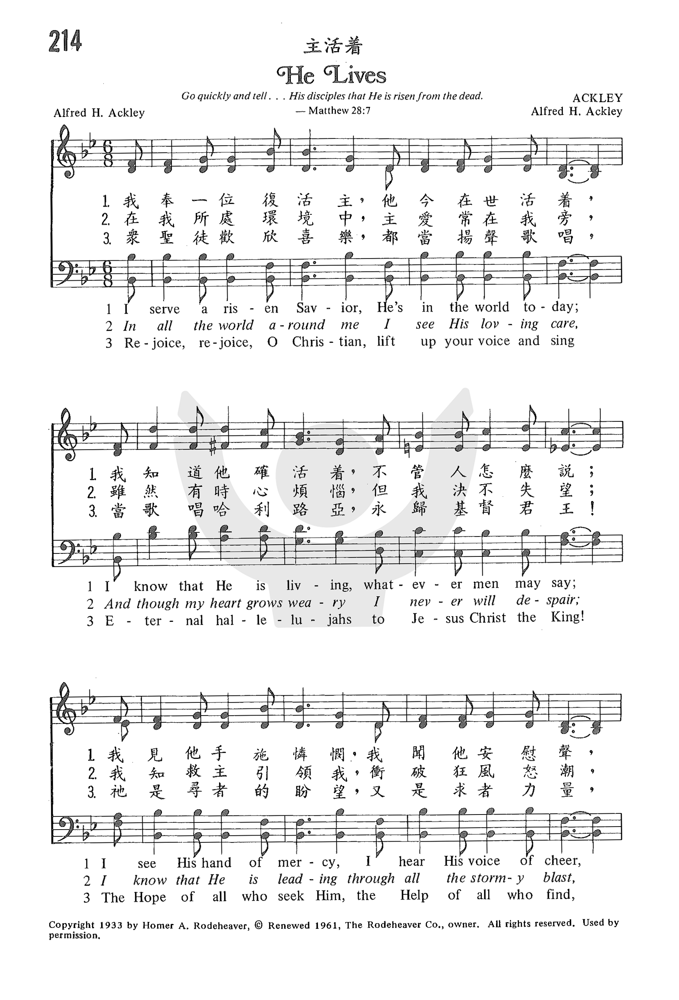

1378 Jesus Lives 主復活 choir
|
|
主活著 He Lives
曲：Alfred Henry Ackley 調：ACKLEY
格律：13.13.13.11.Refrain.
詞：Alfred Henry Ackley 譯：修自頌主新歌
詩集：《世紀頌讚》205首 |
|
I serve a risen Savior
He’s in the world today.
I know that He is living,
Whatever men may say.
I see His hand of mercy;
I hear His voice of cheer;
And just the time I need Him
He’s always near.
He lives, He lives, Christ Jesus lives today!
He walks with me and talks with me along life’s narrow way.
He lives, He lives, salvation to impart!
You ask me how I know He lives?
He lives within my heart.
2
In all the world around me
I see His loving care,
And though my heart grows weary,
I never will despair;
I know that He is leading,
Through all the stormy blast;
The day of His appearing
Will come at last.
3
Rejoice, rejoice, O Christian,
Lift up your voice and sing
Eternal hallelujahs
To Jesus Christ the King!
The Hope of all who seek Him,
The Help of all who find,
None other is so loving,
So good and kind. |
我事奉一復活主，祂今在世活著；
我知道祂確活著，不管人怎麼說；
我見祂手施憐憫，我聞祂安慰聲，
每次當我需求祂，總必垂聽。
在我所處環境中，主愛常在我旁，
雖然有時心煩惱，但卻不會絕望，
我知救主引領我，衝破狂風怒潮，
不日我主必再來，大顯榮耀。
歡樂！歡樂！眾聖徒都當揚聲歌唱，
當歌唱哈利路亞，永歸基督君王，
祂是尋者的盼望，又是求者力量，
無一比祂更可愛，善良仁慈。
副歌：
基督！耶穌！救主今天活著！
祂與我談，祂伴我走，生命窄路同過；
基督！耶穌！賜人得救宏恩；
你問我怎知祂活著？因祂活在我心。 |
|

http://www.shenshi777.com/m/view.php?aid=14369
https://www.iwtfly.com/di-214-shou-zhu-huo-zhe.html
|
|
|
|
 He Lives (Alfred Henry Ackley)
He Lives (Alfred Henry Ackley)
-
|
Short Name: |
A. H. Ackley |
|
Full Name: |
Ackley, A. H. (Alfred Henry), 1887-1960 |
|
Birth Year: |
1887 |
|
Death Year: |
1960 |
Alfred Henry
Ackley

was born 21 January 1887
in Spring Hill, Pennsylvania. He was the youngest son of Stanley Frank
Ackley and the younger brother of B. D. Ackley. His father taught him music
and he also studied at the Royal Academy of Music in London. He graduated
from Westminster Theological Seminary in Maryland and was ordained as a
Presbyterian minister in 1914. He served churches in Pennsylvania and
California. He also worked with the Billy Sunday and Homer Rodeheaver
evangelist team and for Homer Rodeheaver's publishing company. He wrote
around 1500 hymns. He died 3 July 1960 in Los Angeles.
Dianne Shapiro (from
ackleygenealogy.com by Ed Ackley and Allen C. Ackley)
Notes
Scripture References:
ref. = Luke 24:6
Written by
Presbyterian minister Alfred H. Ackley (b. Spring Hill, PA, 1887; d.
Whittier, CA, 1960), both text and tune were published in the Rodeheaver
hymnal Triumphant Service Songs (1933).
(Rodeheaver was a gospel song publisher.) As told by hymnal editor
George Sanville, the following incident provided the spark for Ackley's
inspiration: a young Jewish man asked evangelist/musician Ackley, "Why
should I worship a dead Jew?" To which Ackley replied,
But Jesus lives!
He lives! I tell you. He is not dead, but lives here and now. Jesus
Christ is more alive today than ever before. I can prove it by my
own experience, as well as by the testimony of countless thousands.
Sanville goes on to
explain,
Mr. Ackley's
forthright, emphatic answer, together with his subsequent triumphant
effort to win the man for Christ, flowered forth into song and
crystallized into a convincing sermon on "He lives!" . . . The
scriptural evidence, his own heart, and the testimony of history
matched the glorious experience of an innumerable cloud of witnesses
that "He lives," so he sat down at the piano and voiced that
conclusion in song.
-Forty Gospel Hymn Stories, 1943
Ackley wrote the words
and/or tunes to at least a thousand gospel songs and hymns in
collaboration with his brother Bentley. Trained at the Royal Academy of
Music in London, he was an accomplished cellist. Ackley graduated from
Westminster Theological Seminary in Maryland and served Presbyterian
churches in California and Pennsylvania. In addition to writing his own
hymns, he edited hymnals and gospel song¬books for the Rodeheaver
Publishing Company.
Liturgical Use:
Easter; equally useful on many other occasions of worship.
--Psalter Hymnal
Handbook
Notes
Composed in gospel-song
style, ACKLEY is supported by a simple harmonization intended for part
singing. Some rubato may be observed in the refrain's final line. Observe
two pulses per bar.

主活著
He Lives
我事奉一復活主，祂今在世活著；
我知道祂確活著，不管人怎麼說；
我見祂手施憐憫，我聞祂安慰聲，
每次當我需求祂，總必答應。
在我所處環境中，主愛常在我旁；
雖然有時心煩惱，但卻不會絕望，
我知救主引領我，衝破狂風怒潮，
不日我主必再來，大顯榮耀。
歡樂！歡樂！眾聖徒都當揚聲歌唱，
當歌唱哈利路亞，永歸基督君王，
祂是尋者的盼望，又是求者力量，
無一人像祂可愛，仁慈善良。
（副歌）
主活！主活！救主今日活著！
祂與我談，祂伴我走，生命窄路同過；
主活！主活！賜人得救宏恩；
你問我怎知祂活著，因祂活在我心。
 (請點耳機收聽)
(請點耳機收聽)
在我們遭遇困難時，常忘了我們信靠的是永活的神，且祂從不誤事。當我們一籌莫展時，祗要想到主活著，萬事皆可因祂迎刃而解。
「主活著」的詞曲都是艾克理所作。 艾克理（Alfred Henry Ackley,
1887-1960）生在美國賓州，自幼隨他父親學習音樂，以後又在紐約和倫敦從名師學習聲學及作曲，除了演奏鋼琴，他也是享有盛名的大提琴家。他一面演奏，一面攻讀神學。1914年受長老會按牧，先後在賓州和加州長老會牧會。
1933年艾克理在主領數日佈道會後，有一個年輕的猶太學生連續來了數晚，有一晚他問牧師說：「為甚麼我要敬拜一個已死的猶太人？」艾克理隨即回答
：「我信奉的不是一名死去的猶太人，而是一位永遠活著的耶穌。他比以前更真實，在我和千千萬萬人的生活經歷中，我們有數不盡的見證。」
他繼續為他讀聖經中數段復活的信息。最後心中湧出了音符，他就走到琴旁坐下，一面彈，一面唱:
主活！主活！救主今日活著！祂與我談，祂伴我走，生命窄路同過；
主活！主活！賜人得救宏恩；你問我怎知祂活著，因祂活在我心。
這個年輕人終於接受耶穌基督為救主並生命的主，隨後艾克理就寫下了這首感人的聖詩。
艾克理在牧會之餘，寫了一千餘首聖詩。 其兄艾本敦（Bentley D. Ackley），是鋼琴演奏家，早年在他父親的十四人樂隊巡迴演奏。
除鋼琴、風琴外，精通各種樂器，也寫作聖詩。他因他諳速記，曾為名佈道家孫迪（Billy
Sunday）私人秘書，其後致力主日學運動。他們兄弟兩人合作為出版公司合編了許多聖詩及福音詩歌。
許多教會在復活節時，頌唱這首聖詩。 其實祗要我們心中尊耶穌基督為主，每一日，主都可以活在我們心中，而我們也可以藉著主的同在，在生活中見證祂。
中英文聖詩集參考
英文歌名 He
Lives
頌主新歌 325
頌主新歌(中英文雙語本) 328
教會聖詩 214
生命聖詩 413
新聖詩 300
歡欣讚美 368
聖徒詩集 115
聖詩 307
讚美 90
世紀讚頌 205
頌主聖詩 365
讚美詩(新編) 281
青年聖歌I 19
校園詩歌I 60
註：「歡欣讚美」詩集為英文版，原名是
Celebration Hymnal．
From Wikipedia, the free encyclopedia
Jump to navigationJump
to search
|
He Lives |
|
Genre |
Hymn |
|
Written |
1933 |
|
Based on |
Luke 24:5 |
|
Meter |
7.6.7.6.7.6.7.4 with refrain |
"He Lives" is a Christian hymn,
otherwise known by its first line, "I Serve a Risen Savior". It was
composed in 1933 by Alfred
Henry Ackley (1887-1960), and remains popular today
within most of the body of Christ. It is not delegated to a specific
denomination, nor should it be represented as such. All those who
believe in Christ Jesus must accept His promise of His living within
our hearts. The hymn discusses the experience of Christian believers
that Jesus
Christ lives within their hearts, which is
scriptural in the Word of God: “I am crucified with Christ; and it
is no longer I who live, but it is Christ who lives in
me.”—Galatians 2:20, and “That Christ may make His home in your
hearts through faith.”—Ephesians 3:17. The fundamental foundation is
the word "faith". Christian believers, through faith understand it
is a holy experience given by God, not just a "feeling", nor is it
limited to a denomination.
The hymn is disliked or excluded by
some who believe the song endorses a subjective appeal to
experience, which is less reliable than the words of scripture.[1][2][3]
Uses in other
media[edit]
The hymn is sung by church members in Oranges
Are Not the Only Fruit, a screen adaptation of Jeanette
Winterson's novel of the same name.
References[edit]
-
^ Richard
J. Mouw, Mark A. Noll, Wonderful
Words of Life: Hymns in American Protestant History and
Theology, 2004, Calvin Institute, page 205.
-
^ Michael
S. Horton, Can
We Still Believe in the Resurrection?, 7 No. 2
Modern Reformation 5-14 (Mar./Apr. 1998)
-
^ Bob
De Moor, "He
Lives Within My Heart", The Banner, Jan. 9 2015
https://en.wikipedia.org/wiki/He_Lives
By C. Michael HawnHe Lives
by Alfred H. Ackley;
The United Methodist Hymnal, No. 310But if we have died with Christ, we believe
that we will also live with him. We know that Christ, being raised from the
dead, will never die again; death no longer has dominion over him. The death he
died, he died to sin, once for all; but the life he lives, he lives to God. So
you also must consider yourselves dead to sin and alive to God in Christ
Jesus. (Romans 6:8-11, NRSV)“Why should I worship a dead Jew?” asked a young
Jewish student of Alfred Ackley (1887-1960) at an evangelistic revival (Young,
1993, 391).
Ackley’s response to the question echoed Matthew 28:6, “He is not here: for he
is risen, as he said. Come, see the place where the Lord lay” (KJV). Hymnologist
George Sanville records Ackley’s response to the young student that, in turn,
led to the writing of this hymn: “He lives! I tell you, He is not dead, but
lives here and now! Jesus Christ is more alive today than ever before. I can
prove it by my own experience, as well as the testimony of countless thousands”
(Sanville, 1943, 34).Compared to many Easter hymns, “He Lives” does not recount
the biblical narrative of witnesses to the risen Christ, such as Mary or the
disciples on the Road to Emmaus (Luke 24:13-35). Neither does the hymn explore
classic theological themes of the Resurrection such as Christus Victor, Christ
the victor over death: “Death is swallowed up in victory. O death, where is thy
sting? O grave, where is thy victory? The sting of death is sin; and the
strength of sin is the law. But thanks be to God, which giveth us the victory
through our Lord Jesus Christ” (I Corinthians 15:54b-57, KJV).Ackley’s
assertion, as articulated in the refrain, is totally personal:You ask me how I
know he lives?
He lives within my heart.This has led to Carlton Young’s unflattering commentary
on this hymn in his Companion, “’I see his hand of mercy,’ [Stanza 1] ‘I see his
loving care,’ [Stanza 2] is insufficient evidence of the Resurrection until
verified by those who claim to have experienced Christ in their hearts.
Fortunately, the section of hymns on the Resurrection and exaltation of Christ
[hymns 302-327 in The UM Hymnal] provides many alternatives that are more gospel
centered, theologically convincing, and musically substantial” (Young,
391).While I agree with Dr. Young’s comments, especially with the idea that the
central concept of the Resurrection must be sung from the perspective of many
witnesses throughout time and social location, the nineteenth- and early
twentieth-century gospel song brings to the larger witness a peculiar
perspective and power; that is, sheer unity of theme reinforced by the
rhetorical device of repetition. As noted above, there is no biblical narrative
that retells the story of Christ’s rising from the dead. There is a strong
declamation in the present tense reiterated again and again that “He lives” –
six times each the refrain is sung (eight, if you count the echo “He lives” in
the men’s voices), a total of eighteen times (or twenty-four with the men’s echo
added)! Other forms of this central theme are scattered throughout the song: the
participial form in stanza one – “He is living” – and the subject of the pronoun
“He” in the refrain – “Christ Jesus lives today.” This is a hallmark of the
gospel song.Another characteristic of the gospel song exemplified here is
frequent borrowing of phrases. It is quite likely that Alfred Ackley knew “In
the Garden” by C. Austin Miles (1868-1946) and borrowed the phrase “He walks
with me and he talks with me” verbatim from Miles’ refrain for his own refrain
thirty years later. Such borrowing was a common practice, reflecting not so much
plagiarism as a common personal piety. Indeed, www.hymnary.org displays
more than 130 hymns, most of them gospel songs, that combine the rhyming words
“walk” and “talk” or “walking” and “talking.”The Easter-themed songs by Ackley
and Miles share something else: the lilting musical meter of 6/8. Its dancing
quality suits the more intimate nature of the gospel song.Alfred Ackley was born
in Pennsylvania in 1887 and died in California in 1960. Receiving his early
musical education from his father, he studied musical composition in New York
and at the Royal Academy of Music in London, where he became an accomplished
cellist. After graduating from Westminster Seminary, Princeton, New Jersey,
Ackley was ordained in 1914 and served Presbyterian churches in Pennsylvania and
California.
The author compiled hymnals and songbooks for the Rodeheaver Publishing Company,
a leading publisher of gospel songs. He is credited with 1,500 hymns, gospel
songs, and children's songs, as well as secular and glee songs. In recognition
for his contributions to sacred music, Ackley was awarded an honorary Doctor of
Sacred Music degree from John Brown University in Siloam Springs, Arkansas.
“He Lives” first appeared in the Rodeheaver Company's Triumphant Service
Songs in 1933. It has been a favorite of revival meetings since its publication.
The hymn has many characteristics of the gospel song genre. The refrain carries
the central theme. Not only does the text identify the main thrust of the song,
but also the music lifts the song to an emotional climax. The message is direct
and unmistakable.In many gospel songs, the refrain is so important that people
know the song by the refrain rather than by the opening line of the first
stanza. The stanzas revolve around the theme of the refrain. Most often, the
stanzas are in the first person (gospel songs often reflect a testimony of an
individual believer). The message outlines an understanding that is at the core
of Christian belief – in this case, that core belief is that Christ lives.Gospel
songs often defy the popular notions of the world. For example, the world often
denies the reality of the living Christ: “[W]hatever foes [originally, “men”]
may say,” the living Christ is “always near.”The second stanza provides further
evidence from the experience of the singer’s life. This living Christ is
powerful, leading us through “the stormy blasts” of life. The risen Christ is
our hope and “the day of his appearing will come at last.” These sentiments –
the abiding presence of Christ through all difficulties, and eschatological hope
– are echoed nearly four decades later in “Because He Lives” (1971) by Bill (b.
1936) and Gloria (b. 1942) Gaither (The United Methodist Hymnal, 364).The final
stanza exhorts the broader Christian community to affirm the testimony of the
individual believer. In this stanza, the singular “I” becomes a community “I.”
As all individual singers lift their voices together, the community confirms the
central message of the song.The ultimate confirmation of the song's central
message is not in an intellectual argument, but in a heart-felt faith – “He
lives within my heart.”
FOR FURTHER READING:Young, Carlton R. 1993. Companion to The United Methodist
Hymnal. Nashville: Abingdon Press.Sanville, George W. 1943. Forty Gospel Hymn
Stories. Winona Lake, IN: Rodeheaver Hall-Mack Co.
https://www.umcdiscipleship.org/resources/history-of-hymns-he-lives
“HE LIVES”
“Be strengthened by His Spirit in the inner man; that Christ may dwell in your
hearts…” (Eph. 3:16-17)
INTRO.:
A
song which joyfully proclaims that Christ lives in our hearts is “He Lives (#353
in Hymns
for Worship Revised, #154 in Sacred
Selections for the Church). The text was written and the tune
(Ackley) was composed both by Alfred Henry Ackley, who was born at Spring Hill
in Bradford County, PA, on Jan. 21, 1887, and received his first music
instruction from his father. Later he studied harmony and composition in
New York, NY, and in London, England, at the Royal Academy of Music, becoming an
accomplished cellist. After graduating from Westminster Theological
Seminary in 1914, he became a Presbyterian minister and served churches in
Elmhurst and Wilkes-Barre, PA, and in Escondido, CA.

Throughout his life, Ackley maintained a sharp interest in the writing of hymns
and hymn tunes. His hymns, gospel songs, children’s songs, secular songs,
and college glee club songs number approximately 1,500. As a result of his
efforts, he was awarded the honorary Doctor of Sacred Music Degree from John
Brown University. Associated with the Rodeheaver Publishing Company in the
compilation of hymnbooks, he contributed many songs to these collections. One of
his early hymns, “As a Tree Beside the Waters” copyrighted in 1908, and a later
song, “God’s Tomorrow” copyrighted in 1929, have appeared in a few of our
books.
“He Lives” was produced around 1932 after an experience that Ackley had with a
young Jewish man whom he tried to win to Christ during an evangelistic meeting.
The young man asked the question, “Why should I worship a dead Jew?” This
brought forth Ackley’s immediate reply, “He lives.” After reflecting on
the discussion and rereading the account of Christ’s resurrection, he wrote this
song, which first appeared in Triumphant
Service Songs, published by The Rodeheaver Co. in 1933. Ackley died
at Whittier, CA, on July 3, 1960. The copyright to the song was renewed in
1961 by the Rodeheaver Co., now a division of Word Inc. Alfred’s brother,
Bentley DeForest Ackley was also a noted hymn writer and composer.
Among hymnbooks published by members of the Lord’s church for use in churches of
Christ, the song has appeared in 1971 Songs
of the Church, the 1990 Songs
of the Church 21st C.
Ed., and the 1994 Songs
of Faith and Praise all edited by Alton H. Howard; the 1978 Hymns
of Praise edited by Reuel Lemmons; the 1978/1983 Church
Gospel Songs and Hymns edited by V. E. Howard; the 1992 Praise
for the Lord edited by John P. Wiegand; and the 2009 Favorite
Songs of the Church, and the 2010 Songs
for Worship and Praise both edited by Robert J. Taylor; in
addition to Hymns
for Worship and Sacred
Selections.
The song emphasizes the fact that Jesus Christ is still alive today.
I. Stanza 1 reminds us that Jesus is a risen Savior
I serve a risen Savior; He’s in the world today.
I know that He is living, whatever men may say.
I see His hand of mercy, I hear His voice of cheer,
And just the time I need Him He’s always near.
A. The Biblical account is the prime evidence that Jesus is a risen Savior:
Matt. 28:1-10
B. We can still hear His voice of cheer because it is recorded in the
Scriptures: Matt. 14:27
C. Therefore, we can know that when we need Him He’s always near, having
promised to be with us to the end of the world: Matt. 28:18-20
II. Stanza 2 reminds us that this risen Savior is still active in the world
In all the world around me I see His loving care,
And though my heart grows weary I never will despair.
I know that He is leading, thro’ all the stormy blast;
The day of His appearing will come at last.
A. We can see His loving care in all the world around us because He upholds all
things by the word of His power: Heb. 1:2-3
B. He is leading through all the stormy blast because He is the one who has the
keys of Hades and of Death: Rev. 1:18
C. As a result we look for the day of His appearing which will come at last: 2
Pet. 3:10
III. Stanza 3 reminds us that this risen Savior is also active in the lives of
His people
Rejoice, rejoice, O Christian! Lift up your voice and sing
Eternal hallelujahs to Jesus Christ, the King!
The Hope of all who seek Him, the Help of all who find,
None other is so loving, so good and kind.
A. Because Jesus is a risen and living Savior, we can rejoice in Him: Phil. 4:4
B. And we should sing hallelujahs to Him, both now and in eternity, for what He
has done: Rev. 5:8-10
C. He is the Hope and the Help of all who seek to know Him and the power of His
resurrection: Phil. 3:10
CONCL.:
The chorus affirms that because Jesus arose He continues to live.
He lives, He lives, Christ Jesus lives today!
He walks with me and talks with me along life’s narrow way.
He lives, He lives, Salvation to impart!
You ask me how I know He lives? He lives within my heart.
Some object to the last two lines of the chorus because they sound a lot like
subjective, “better felt than told” religion. It is true that Jesus
spiritually dwells in our hearts by faith, but we know that Jesus is alive
because of the objective evidence presented in the word, not just because we
feel it in our hearts. However, I have never seen any attempt to alter the
words. Each one will have to make his own decision as to whether he can
sing these lines or not. Regardless, we can still be thankful for the fact
that “He Lives.”